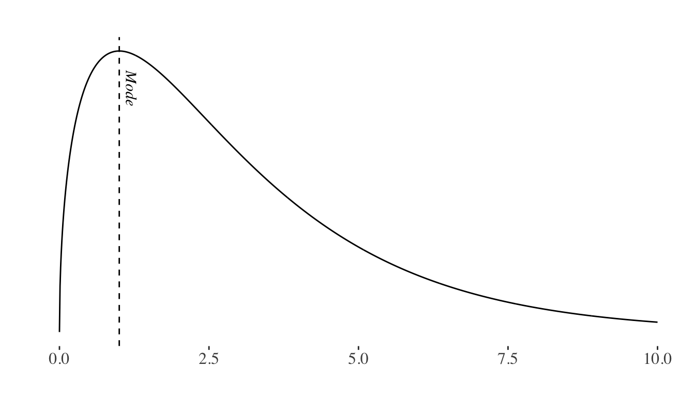

Descriptive statistics
class notes
Introduction
In this class, we will dive into the basics of statistics and probability. We will first explore the most frequently employed indicators for describing one or more variables and understanding the relationships between them. Secondly, we will delve into a series of techniques for making population inferences based on a sample.
A solid understanding of the fundamental concepts of statistics and probability is essential to comprehend R’s operations, as well as to make informed choices when selecting the most suitable indicators to explore and interpret the information contained in a data set.
Data generating process and probability
The analysis of probabilities begins with a data-generating process. Any phenomenon that systematically produces some kind of information is a data-generating process.
Each iteration of this process produces information, which we can interpret as an outcome. The sample space is the set of all possible outcomes of an experiment. An event is any set of outcomes that have occurred: an elementary event refers to a single outcome in the sample space and a compound event refers to multiple outcomes (Bertsekas and Tsitsiklis 2008).
In this framework, we can define probability as an attribute of events indicating how “likely” they are to occur1, where (Devore 2011):
The probability of any event in the sample space is always between 0 and 1, where 0 indicates impossibility and 1 indicates certainty.
The probability that at least one of the elementary events in the entire sample space will occur is 1.
For any events A and B, the probability that an event in A or B will happen is the sum of the probability of an event in A and the probability of an event in B, minus the probability of an event that is in both A and B.
Conditional probability and independence
Conditional probability is a measure of the probability of an event occurring given the occurrence of another event. We will represent the probability of event A happening given the event B using \(P(A/B)\)2.
Two events A and B are said to be independent if there is no relationship between them, that is to say that the probability of event A occurring does not depend on the occurrence of event B: \(P(A/B) = P(A)\).
Sample vs population
A population is a set or universe of items (objects, households, people, etc.) of interest.
A sample is a subset of observations drawn from a population3.
Probability distributions
A variable is any characteristic whose value can vary from one object to another within the population. Events will be defined as a set of outcome values for the variable or variables observed 4.
A probability distribution is a function describing the probability of each possible outcome within the sample space.
There are two types of distributions:
- A discrete probability distribution is the probability distribution of a random variable that can take on only a countable number of possible values.5
- A continuous probability distribution is the probability distribution of a random variable that can take on an uncountable number of possible values.6
Probability distributions are characterized by their parameters, which refer to the population’s characteristics.
For example, the normal distribution is characterized by its mean and variance (or standard deviation)7.
The Central Limit Theorem8 states that even when individual variables are not normally distributed, the sums and averages of the variables will approximately follow a normal distribution (Devore 2011).
On the other hand, for example, the Chi-Squared distribution is characterized by its degrees of freedom.
Note that, while distributions may be symmetrical (e.g.: the normal distribution), they might also be positively skewed (e.g.: the chi-squared distribution), or negatively skewed when the tail of the distribution extends towards the left side of the curve, indicating a higher frequency of values at the higher end of the distribution.
Statistics vs probability
In a probability problem, it is assumed that the properties of the studied population are known, allowing questions to be posed and answered regarding a sample extracted from that population. Starting with a data-generating process, the probability distribution and population parameters can be derived, enabling the computation of the probability of specific events occurring when a sample is taken.
In a statistics problem, on the other hand, the researcher knows the characteristics of a sample, and this information allows them to draw conclusions about the population. Starting with a sample, the probability distribution and its associated parameters can be inferred, finally enabling the researcher to draw conclusions about the data-generating process.

Statistical inference basics
Point estimation involves the use of sample data to calculate a single value which is to serve as a “best guess” of an unknown population parameter. We call this value an estimator, where estimators are statistics, that is to say, functions of the values of the variables to be gathered from the sample.
It is also possible to estimate an interval within which we believe a population parameter lies. The advantage of this approach is that we can determine the probability that the population parameter truly lies within this interval. This statistical technique is known as confidence intervals.
Finally, we can calculate the probability that the population parameter is greater than, less than, or equal to a certain value. This is known as hypothesis testing.
When applying these techniques, functions are constructed based on the sample data, which are then compared to known theoretical distributions. We will further develop the key concepts to understand how to apply them in the upcoming sections.
Descriptive basics
Variables can be classified as (James et al. 2013):
Qualitative: these variables can take on one of a limited number of possible values, assigning each observation to a class or category on the basis of some qualitative property. The variable is considered ordinal if values can be ordered (e.g. education level: primary, secondary, etc.) and nominal if values present no order (e.g. colors: yellow, red, blue, etc.)
Quantitative: these variables take on numerical values. They can be discrete or continuous (depending on whether there are “gaps” or “jumps” between values).
One of the main tools to analyze qualitative data are contingency tables, where each value in the table represents the number of times a particular outcome or combination of variable outcomes occurred (Çetinkaya-Rundel and Hardin 2021).
In order to explore the information contained in the data describing a sample or population through its quantitative variables we can rely on numerical summary measures. These summary measures can be used to describe the main characteristics of the population (parameters) or the sample (estimators). Additionally, we can rely on these tools to study the characteristics of a single variable or the relationship between several variables.
Measures of centrality
Measures of centrality will provide information regarding the location of a set of numbers, particularly its center. We will rely on them for the analysis of a single variable.
Mean
The arithmetic mean (or average) is obtained by adding the observation values and dividing the sum by the total number of values9.
The weighted mean follows a similar methodology, but each observation does not contribute equally to the final average. The contribution of each observation to the mean is determined by it’s weight10. This measure becomes particularly useful when each observation in our sample corresponds to varying proportions of the population (which is usually the case when working with household surveys).
The trimmed mean is a calculation of the arithmetic mean that removes a certain percentage of extreme values from each end of the distribution, reducing the influence of outliers11 in the result.
Mode
The mode is the most frequently occurring value of the distribution.

Median
The median is the middle value in an ordered list of values. It separates the distribution in such a way that 50% of the values are on its left and 50% are on its right.
Note that the mean, mode and the median may or may not coincide in a distribution.
Quantiles
As we mentioned, the median represents the value that divides the data leaving 50% on one side and 50% on the other. This concept can be generalized to any X% using quantiles. The Xth quantile is the value that divides the distribution, with X% of the data to its left and 1-X% to its right.
Some of the most commonly used quantiles are the 25th percentile, also known as \(Q_{1}\) (the first quartile), \(Q_{2}\) (the median), and \(Q_{3}\) (the third quartile). \(Q_{1}\) separates the lower 25% of the data, \(Q_{2}\) represents the median, and \(Q_{3}\) separates the lower 75% of the data, leaving the upper 25% to the right.
Measures of dispersion
Measures of dispersion will help us interpret the variability of data or, in other words, the spread of a variable’s distribution. We will also rely on them for the analysis of a single variable.
Variance
Variance quantifies the dispersion or spread of a set of data points providing information about how far each value in the dataset deviates from the mean (average) of the data. Specifically, it measures the average squared12 difference between each data point and the mean13.
Standard deviation
The standard deviation is the square root of the variance and provides similar information in a more easily interpretable unit. By computing the square root of the variance, the value is expressed in the same units as the original set of values14.
Relationships between variables
Linear and non-linear relationships
When analyzing the relationship between two quantitative variables, linear relationships between two \(X\) and \(Y\) variables can be described by a linear equation such as:
\[ Y = b + mX\]
That is to say, for any value of \(X\) and \(Y\) an increase (decrease) in \(X\) will imply a proportional increase (decrease) in \(Y\).
Correlation
Correlation quantifies the strength and direction of the linear relationship between two variables15. It can take values between -1 (perfect negative relationship) and 1 (perfect positive relationship), with 0 indicating no linear relationship. The correlation value has no units and will not be affected by a linear transformation in the variables (Çetinkaya-Rundel and Hardin 2021). It is important to remember that correlation does not imply causation.
Two of the main correlation calculation methods are Pearson’s and Spearman’s correlation.
Pearson’s correlation is useful to evaluate linear relationships between variables (and will yield 0 if no linear relationship can be found), but is very sensitive to outliers.
Spearman’s correlation is not as sensible to outliers and can identify monotonic (non-linear) relationships between variables, that is to say, scenarios where when the value of one variable increases, the value of the other variable either consistently increases or consistently decreases, even if these transformations are not proportional.
The choice of our method will therefore depend on whether the relationship between variables is linear or monotonic, and whether our data includes outliers or not.
Confidence intervals
A confidence interval for an unknown population parameter \(\theta\) is an interval built using sample data which will contain \(\theta\) with a given high probability which we will refer to as a confidence level (Bertsekas and Tsitsiklis 2008). It is a good practice to complement point estimations with confidence intervals, thus providing a measure of the precision of our estimation.
A \(X\)% confidence interval has the following property: if we take repeated samples and construct the confidence interval for each sample, \(X\)% of the intervals we build will contain the true unknown value of the parameter16 (James et al. 2013).
Hypothesis testing
Hypothesis tests are built upon two hypotheses: the null hypothesis (\(H_{0}\)) and the alternative hypothesis (\(H_{1}\)). For example, if we wanted to test whether the population mean (\(\mu\)) of a distribution is greater than \(X_{i}\), we would formulate the following hypotheses:
\(H_{0}: \mu = X_{i}\)
\(H_{1}: \mu > X_{i}\)
The purpose of a test is to determine whether there is sufficient evidence to reject the null hypothesis, which typically describes the current state of knowledge. Therefore, we can think of rejecting \(H_{0}\) as making a new discovery.
In order to do find evidence for or against the null hypothesis, it is necessary to compute a test statistic, which summarizes the extent to which our data are consistent with \(H_{0}\).
Testing the null hypothesis, we may commit a type I error if we reject \(H_{0}\) when \(H_{0}\) is correct, or a type II error if we do not reject \(H_{0}\) when \(H_{0}\) is not correct.
| Decision | \(H_{0}\) | \(H_{1}\) |
|---|---|---|
| Reject \(H_{0}\) | Type I Error | Correct |
| Do Not Reject \(H_{0}\) | Correct | Type II Error |
The probability of rejecting \(H_{0}\) if \(H_{0}\) is correct (type I error), conventionally represented with \(\alpha\), is the statistical significance of the test. The p-value is the minimum level of significance at which we will reject the test. We will therefore try to accept or reject our hypothesis keeping the probability of false rejection (type I error) suitably small17.
On the other hand, the power of the hypothesis test is defined as the probability of not making a type II error.
There is a trade-off between reducing the probability of committing a type I error and a type II error, and researchers will typically prioritize avoiding type I errors, because they involve declaring a scientific finding that is not correct (James et al. 2013).
Discussion
The sample size poses a challenge because if it is too small, we may not be able to draw meaningful conclusions (or extrapolate our results), even if the phenomenon we aim to test actually exists.
However, the most relevant issue in the era of big data is that we will often work with extremely large samples, which may result in an exaggerated tendency to reject null hypotheses when observing minimal differences18. This will require extreme care when interpreting our results, that is to say, having a clear and well-informed hypothesis, backed by a clear understanding of what could potentially account for differences among groups. On the other hand, it’s important to note that merely displaying two or more distributions with some degree of dissimilarity, especially when there is overlap, falls short of confirming the presence of significant differences between groups. Conducting rigorous testing is fundamental to substantiate such claims.
Final Remarks
During this lecture, we’ve introduced the fundamental concepts of statistics and probability you will need when analyzing data. As we draw this lecture to a close, it’s important to remember that this is an introductory course: we assume you have some previous knowledge on statistics, and we’re here to help you understand how to apply this knowledge to data science.
A solid grasp of statistics is a fundamental pillar of good data science, and it is therefore important to study in greater depth the concepts discussed during the class, as well as specific tools you might need on particular projects. The course’s bibliographical references serve as an excellent starting point!
References
Bertsekas, Dimitri P., and John N. Tsitsiklis. 2008. Introduction to Probability. 2nd ed. Optimization and Computation Series. Belmont: Athena scientific.
Çetinkaya-Rundel, Mine, and Johanna Hardin. 2021. Introduction to Modern Statistics. OpenIntro.
Devore, Jay L. 2011. Probabilidad y Estadística Para Ingeniería y Ciencias. 8a ed. México: Cengage Learning.
James, G, D Witten, T Hastie, and R Tibshirani. 2013. An Introduction to Statistical Learning with Applications in R. Second. Springer.
Footnotes
Bayes’ theorem provides us with a method to reverse or convert a conditional probability (That is to say, to obtain \(P(A/B)\) knowing \(P(B/A)\)): \[ P(A/B) = \frac{P(B/A)P(A)}{P(B)} \]↩︎
Conventionally, uppercase (N) is often used to represent the population, while lowercase (n) is used to denote samples.↩︎
For instance, consider a population in which each object represents an ice cream cone and we are observing the variable “taste”, with the following possible outcome values: chocolate, strawberry, and vanilla.↩︎
Consider, for example, our ice cream “taste” variable: we have three possible values.↩︎
For example, a person’s height. Since this is a continuous set of numbers, the possible values it can take are uncountable, as there are always intermediate values between any two numbers. For example, between 170 and 171, you have 170.5, between 170 and 170.5, there’s 170.25, and so on.↩︎
We will elaborate on the information contained within these parameters in the following sections.↩︎
For a series of values \(x_{1}, x_{2}, x_{3},...,x_{n}\) we can obtain the mean (\(\overline{x}\)) using: \[ \overline{x} = \frac{1}{n} \sum_{i=1}^{n} x_{i} \]↩︎
For a series of values \(x_{1}, x_{2}, x_{3},...,x_{n}\) and weights \(w_{1}, w_{2}, w_{3},...,w_{n}\) we can obtain the weighted mean using: \[ \frac{\sum_{i=1}^{n} w_{i}x_{i}}{\sum_{i=1}^{n} w_{i}} \]↩︎
An outlier is an observation that appears extreme relative to the rest of the data. Outliers might result from data collection or data entry errors, or might provide interesting unexpected information about the data (Çetinkaya-Rundel and Hardin 2021). Therefore, removing outliers from our calculations might or might not constitute a good practice in each particular context.↩︎
Make sure you understood the fundamental reasoning behind this concept: what’s the rationale for employing the squared difference?
(Here’s a hint: consider positive and negative differences may cancel each other out).↩︎For a series of values \(x_{1}, x_{2}, x_{3},...,x_{n}\) we can obtain the variance using: \[ \frac{1}{n} \sum_{i=1}^{n} (x_{i} - \overline{x})^2 \]↩︎
We can obtain it using: \[ \sqrt{\frac{1}{n} \sum_{i=1}^{n} (x_{i} - \overline{x})^2} \]↩︎
Visit this site for an intuitive visualization on correlation.↩︎
Visit this site for a visualization on the interpretation of confidence intervals↩︎
How small should our p-value be? Conventionally, a p-value smaller than 0.05 is considered statistically significant, suggesting strong evidence against the null hypothesis. However, the benchmark value for the significance level may vary depending on the specific problem and the preferences of the researcher or decision-maker.↩︎
A common approach to address this distortion is to conduct our tests on random subsamples of our data.↩︎